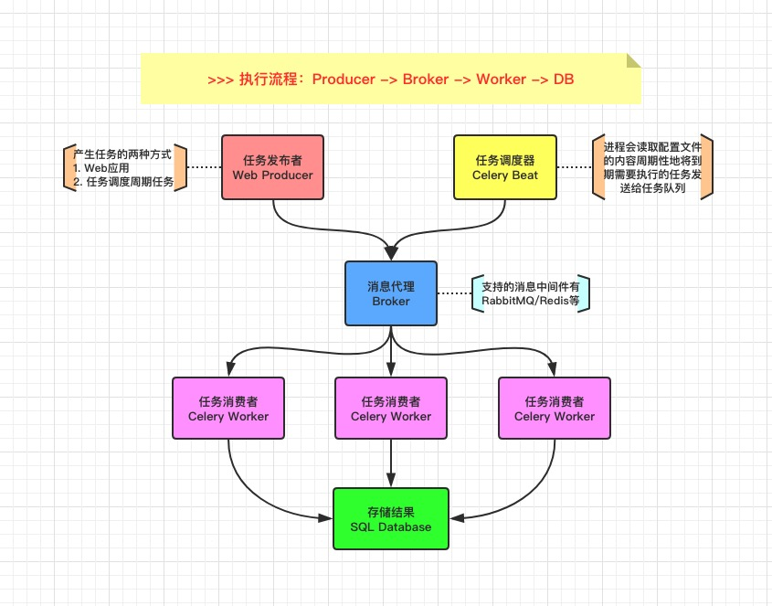

Celery是由
Python语言开发的简单、灵活、可靠的分布式任务队列。其本质是生产者消费者模型，生产者发送任务到消息队列，消费者负责处理任务。Celery侧重于实时操作，但对调度支持也很好，其每天可以处理数以百万计的任务。
1. 简介说明
了解 Celery 工具的特点和使用场景

在一个应用服务中，对于时效性要求没那么高的业务场景，我们没必要等到所有任务执行完才返回结果。例如用户注册场景中，保存了用户账号密码之后，就可以立即返回，后续的账号激活邮件，可以用一种异步的形式去处理，这种异步操作可以用队列服务来实现。否则，如果需要用户等到邮件发送成功后，可能几秒过去了，该用户也就会流失了。
[1] 功能特点
- 简单：熟悉
Celery的工作流程后配置使用比较简单 - 快速：一个单进程的
Celery每分钟可处理上百万个任务 - 灵活：几乎
Celery的各个组件都可以被扩展及自定制 - 高可用：当任务执行失败或发生连接中断时会自动尝试重新执行任务
[2] 应用场景
- 重量级：在使用之前先评估是否需要使用
Celery呢？如果只是轻量级使用而已，可以使用其他库来代替 - 坑比较多：使用过
Celery的同学都知道，如果随版本更新可能会有意外的收获，我们现在的项目都是固定Celery版本的 - 文档质量差：阅读过官方文档的都知道，文档组织其实有点不好，而且配置参数居多，脑子痛
[3] 应用场景
- web 应用
- 当用户在网站进行某个操作需要等待很长时间完成时，我们可以将这种操作交给
Celery执行，然后直接返回给用户，等到Celery执行完成以后通知用户，可以大大提好网站的并发以及用户的体验感。
- 当用户在网站进行某个操作需要等待很长时间完成时，我们可以将这种操作交给
- 任务场景
- 比如在运维场景下需要批量在几百台机器执行某些命令或者任务，此时
Celery就可以轻松搞定。
- 比如在运维场景下需要批量在几百台机器执行某些命令或者任务，此时
- 定时任务
- 像定时导数据报表、发送邮件通知等场景，虽然
Linux的计划任务可以实现，但是非常不利于管理，而Celery可以提供管理接口和丰富的API接口。
- 像定时导数据报表、发送邮件通知等场景，虽然
# 最简单的Demo示例
from celery import Celery
app = Celery('hello', broker='amqp://guest@localhost//')
@app.task
def hello():
return 'hello world'
2. 架构原理
熟悉其项目的组织架构以及工作原理
Celery 库是一个非常强大的分布式任务队列，它可以让任务的执行完全脱离主程序，甚至可以被分配到其他主机上运行(有坑)。我们通常，使用它来实现异步任务(async task)和定时任务(crontab)。

[1] 核心角色
- Task
- 任务(
Task)就是你要做的事情，例如一个注册流程里面有很多任务，给用户发验证邮件就是一个任务，这种耗时任务可以交给Celery去处理。还有一种任务是定时任务，比如每天定时统计网站的注册人数，这个也可以交给Celery周期性的处理。
- 任务(
- Beat
Beat是一个定时任务调度器，它会根据配置定时将任务发送给Broker，等待Worker来消费。
- Broker
- 在
Celery中它介于生产者和消费者之间经纪人，这个角色相当于数据结构中的队列。例如一个Web系统中，生产者是处理核心业务的Web程序，业务中可能会产生一些耗时的任务，比如短信。生产者会将任务发送给Broker，就是把这个任务暂时放到队列中，等待消费者来处理。消费者是Worker， 是专门用于执行任务的后台服务，将实时监控队列中是否有新的任务，如果有就拿出来进行处理。Celery本身不提供队列服务，一般用Redis或者RabbitMQ来扮演Broker的角色。
- 在
- Worker
Worker就是那个一直在后台默默执行任务的人，也称为任务的消费者。它会实时地监控队列中有没有任务，如果有就立即取出来执行。
- Backend
Backend用于保存任务的执行结果，每个任务都有返回值，比如发送邮件的服务会告诉我们有没有发送成功，这个结果就是存在Backend中。当然我们并不总是要关心任务的执行结果，所以也可以不需要。
[2] 工作原理
- 任务模块
Task包含异步任务和定时任务 - 任务执行单元
Worker实时监视消息队列获取队列中的任务执行 Woker执行完任务后将结果保存在Backend中
[3] Celery 序列化
- 在客户端和消费者之间传输数据需要序列化和反序列化
- 选择 RabbitMQ 作为消息代理
- RabbitMQ 的 Python 客户端选择 librabbitmq 这个 C 库
- 选择 Msgpack 做序列化
- 选择 Redis 做结果存储

3. 快速上手
接触任何新东西，没有什么比实际动手学得更快了。
- [1] 安装 Celery 工具
# 依赖安装
# [一个坑] celery和redis版本有强依赖
$ pip install -U "celery[redis]"
Looking in indexes: https://mirrors.aliyun.com/pypi/simple/
Collecting celery[redis]
Downloading https://mirrors.aliyun.com/pypi/packages/xx6exx/celery-4.4.0-py2.py3-none-any.whl (421kB)
|████████████████████████████████| 430kB 11.1MB/s
Requirement already satisfied, skipping upgrade: kombu<4.7,>=4.6.7;
Requirement already satisfied, skipping upgrade: redis>=3.2.0;
......
Installing collected packages: celery
Found existing installation: celery 4.3.0
Uninstalling celery-4.3.0:
Successfully uninstalled celery-4.3.0
Successfully installed celery-4.4.0
- [2] 目录结构
# [配置方式1] 将配置专门写到一个配置文件中，创建实例后读取
# [配置方式2] 不将配置写入文件，而是直接通过统一配置文件获取并初始实例
# 代码目录结构
learn_celery
├── __init__.py # 定义模块并创建实例
├── config.py # 配置文件
├── tasks.py # 创建多个任务
└── user.py # 用户注册流程
- [3] 文件内容
# __init__.py => 定义模块并创建实例
from celery import Celery
app = Celery('learn_celery') # 创建Celery实例且名称为learn_celery
app.config_from_object('learn_celery.config') # 从配置文件config.py中加载配置参数
# config.py => 配置文件
# 配置中的CELERY_为特定前缀
# https://docs.celeryproject.org/en/latest/genindex.html
BROKER_URL = 'redis://:123456@127.0.0.1:6379/0' # Broker配置
CELERY_RESULT_BACKEND = 'redis://:123456@127.0.0.1:6379/0' # BACKEND配置
CELERY_RESULT_SERIALIZER = 'json' # 结果序列化方案
CELERY_TASK_RESULT_EXPIRES = 60 * 60 * 24 # 任务过期时间
CELERY_TIMEZONE='Asia/Shanghai' # 时区配置
CELERY_IMPORTS = ('learn_celery.tasks',) # 指定导入的任务模块
# tasks.py => 创建多个任务
import time
from learn_celery import app
@app.task
def send_mail(mail):
print(f'send mail to {mail}')
time.sleep(5)
return "success"
@app.task
def send_msg(phone):
print(f'send message to {phone}')
time.sleep(5)
return "success"
# user.py => 用户注册流程
from time import time
from learn_celery.tasks import send_msg
def register():
start_time = time()
print("1.验证邮箱地址合法")
print("2.验证电话号码合法")
print("3.发送短信进行注册...")
send_msg.delay('13888888888')
print("4.短信验证码正确可以通知用户进行注册!")
spend_time = time() - start_time
print(f'spend time is {spend_time}s.')
if __name__ == '__main__':
register()
- [4] 运行方式
# docker-compose.yml
version: "2.4"
services:
redis:
restart: on-failure
container_name: celery_redis
image: redis:latest
ports:
- "6379:6379"
command: ["redis-server", "--requirepass", "123456"]
networks:
- celery_redis
networks:
celery_redis:
# 启动redis服务
$ docker-compose up -d
# 前台启动Worker进程
# worker: 代表启动是worker角色，当然也可以启动其他角色
# -A: 自行指定Celery实例; -l: 表示启动的日志级别; -c: 表示启动的进程数
# -n: 指定Worker; -Q: 指定队列启动消费者进程; -B: Beat和Worker进程一并启动
# http://docs.celeryproject.org/en/latest/userguide/workers.html
$ celery worker -A learn_celery.tasks -c 2 -l info
# 启动Beat进程完成定时任务
$ celery beat learn_celery.tasks -l info
# 虽然启动了worker，但是我们还需要通过异步方法
# 如delay或apply_async来将任务添加到worker中
# 添加任务并返回AsyncResult对象获取结果
In [38]: from learn_celery import tasks
In [39]: while True:
...: t = tasks.send_mail.delay('demo@gmail.com')
...: time.sleep(1)
...:
Out[39]: <AsyncResult: c933fd2a-bfdc-4ca6-809e-3e6369ef61fa>
# AsyncResult除了get方法用于常用获取结果方法外还提以下常用方法或属性
# state: 返回任务状态
# task_id: 返回任务id
# result: 返回任务结果，同get()方法
# ready(): 判断任务是否以及有结果，有结果为True，否则False
# info(): 获取任务信息，默认为结果
# wait(t): 等待t秒后获取结果，若任务在执行中，则wait期间一直阻塞，直到超时报错
# successfu(): 判断任务是否成功，成功为True，否则为False
$ python -m learn_celery.user
1.验证邮箱地址合法
2.验证电话号码合法
3.发送短信进行注册...
4.短信验证码正确可以通知用户进行注册!
spend time is 0.16619586944580078s.
- [5] 使用 Flower 监控队列任务
# 可视化只要一步而已
$ celery flower --port=5551 --broker=redis://:escape@127.0.0.1:6379/0